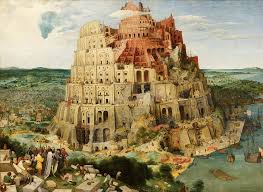
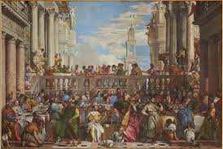

The Mona Lisa is a half-length portrait painting by the Italian artist Leonardo da Vinci. Widely considered an archetypal masterpiece of the Italian Renaissance, it has been described as "the best known, the most visited, the most written about, the most sung about, the most parodied work of art in the world." The painting is renowned for the sitter's mysterious smile, which has been the subject of much debate and fascination for centuries. It is believed to be a portrait of Lisa Gherardini, the wife of Florentine cloth merchant Francesco del Giocondo. The work's originality lies in its innovative use of sfumato—a technique of subtle blending of tones and colors to create a soft, hazy quality. Completed around 1503 to 1519, it hangs permanently at the Louvre Museum in Paris, where it attracts millions of visitors annually.

The Starry Night, an iconic masterpiece by the Dutch Post-Impressionist artist Vincent van Gogh, is one of the most celebrated paintings in the history of art. Created in 1889 while Van Gogh was in an asylum in Saint-Rémy-de-Provence, France, the painting captures a view from his east-facing window just before sunrise, with the addition of an imagined village. The work is defined by its dramatic, swirling sky, where vibrant blues and yellows are applied with thick, expressive brushstrokes known as impasto. The powerful, tumultuous sky, with its eleven luminous stars and a brilliant crescent moon, is often seen as a reflection of Van Gogh's emotional turmoil, while the peaceful, dark village below provides a striking contrast. Despite Van Gogh's own ambivalence toward the piece, it has become a "touchstone of modern art," celebrated for its emotional intensity and pioneering use of color and texture.
La Primavera (meaning "Spring"), a large panel painting by the Italian Renaissance master Sandro Botticelli, is one of the most celebrated and debated works in Western art history. Created around 1480 for the Medici family, the painting depicts a group of mythological figures in a lush garden, a setting that scholars believe represents the arrival of spring. On the far right, Zephyrus, the wind god, chases and abducts the nymph Chloris, who in turn is transformed into Flora, the goddess of flowers. In the center stands Venus, the goddess of love, with Cupid flying above her. The three Graces dance on her left, while Mercury, the messenger god, dispels clouds with his staff. The painting's meaning is highly allegorical, with interpretations ranging from a celebration of love and fertility to a complex philosophical commentary on Neoplatonism. The intricate detail of the flora—with over 500 identified plant species—and the graceful, flowing figures make it a masterpiece of early Renaissance art.
The Wedding Feast at Cana, a monumental oil painting by the Italian Renaissance artist Paolo Veronese, is an iconic masterpiece housed in the Louvre Museum. Completed in 1563 for the refectory of a monastery in Venice, the painting depicts the biblical story of Jesus's first miracle, where he transforms water into wine at a wedding banquet. However, Veronese takes artistic license by setting the scene not in ancient Galilee, but in a lavish 16th-century Venetian celebration, complete with sumptuous fabrics, opulent architecture, and a huge cast of over 130 figures, many of whom are believed to be portraits of historical figures. Despite the bustling, celebratory atmosphere and the sheer scale of the work, Jesus and Mary are placed at the center of the main table, subtly drawing the viewer's eye to the spiritual significance amidst the earthly revelry. The painting's rich colors and intricate details make it a testament to Veronese's skill and the vibrant culture of Renaissance Venice